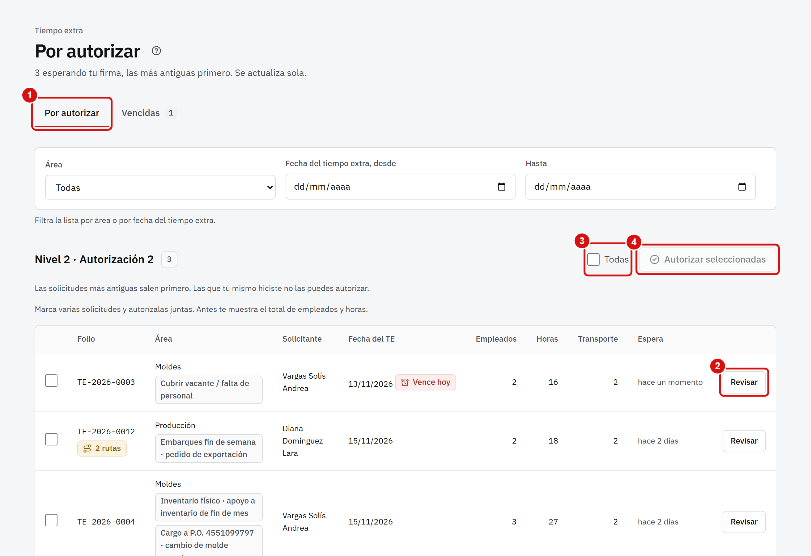
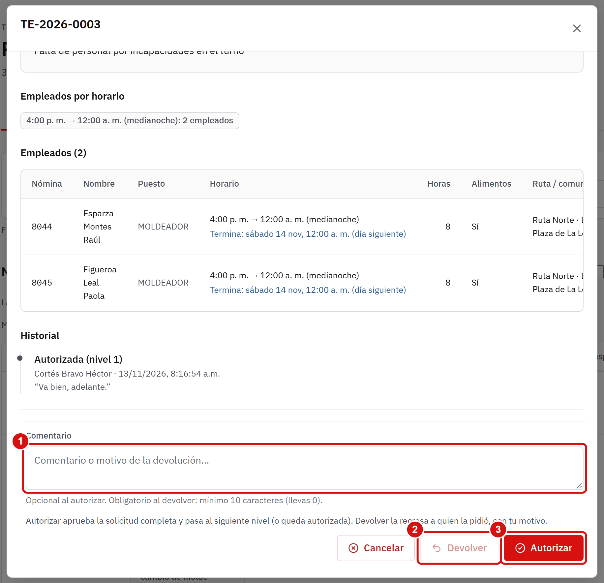
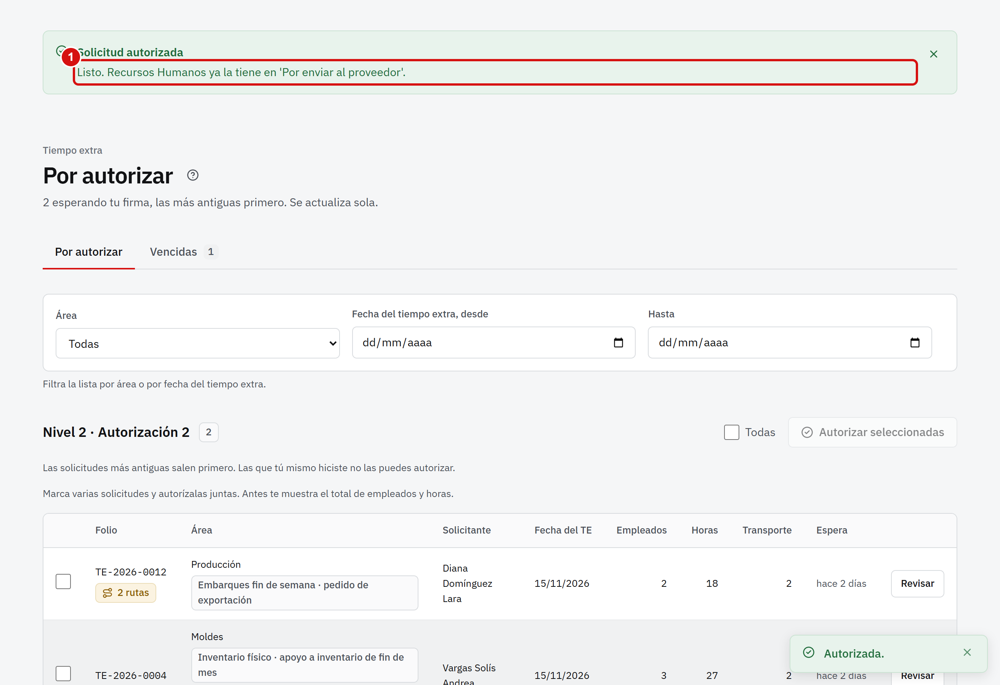
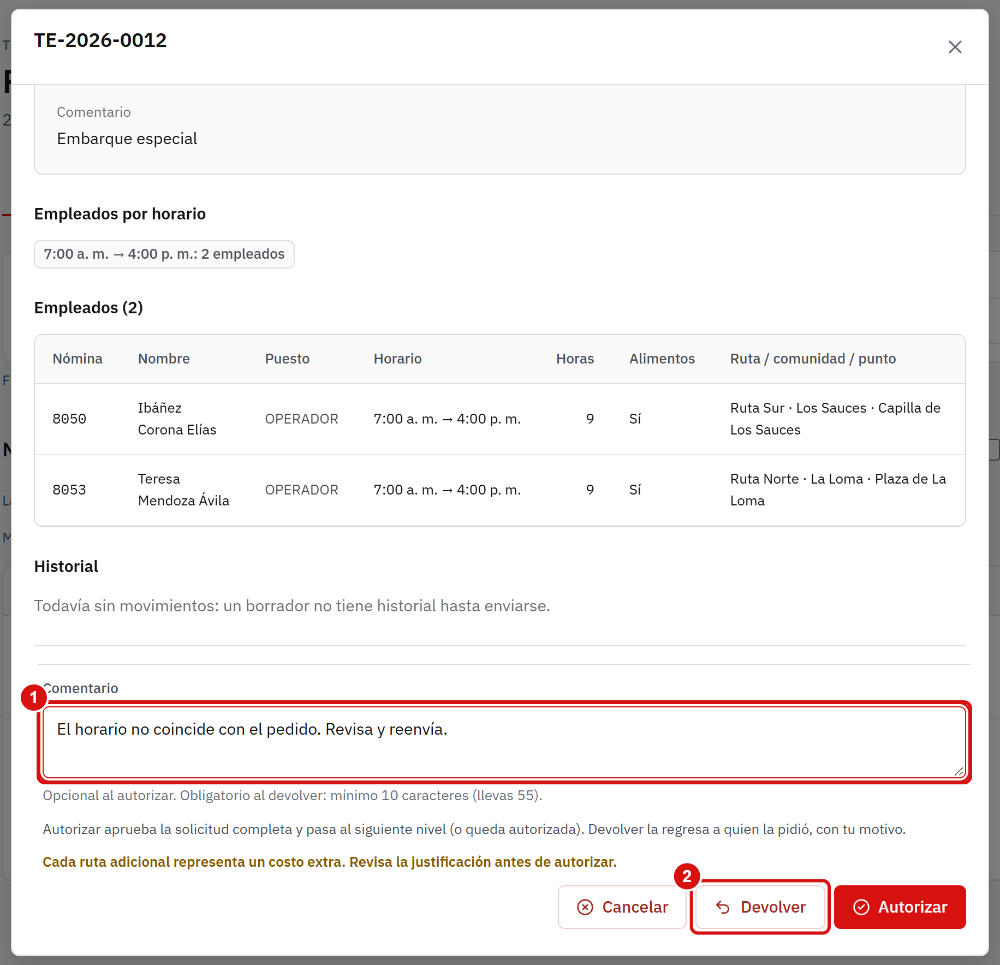
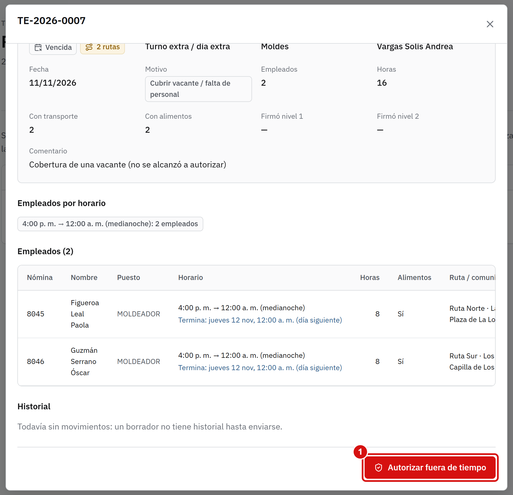
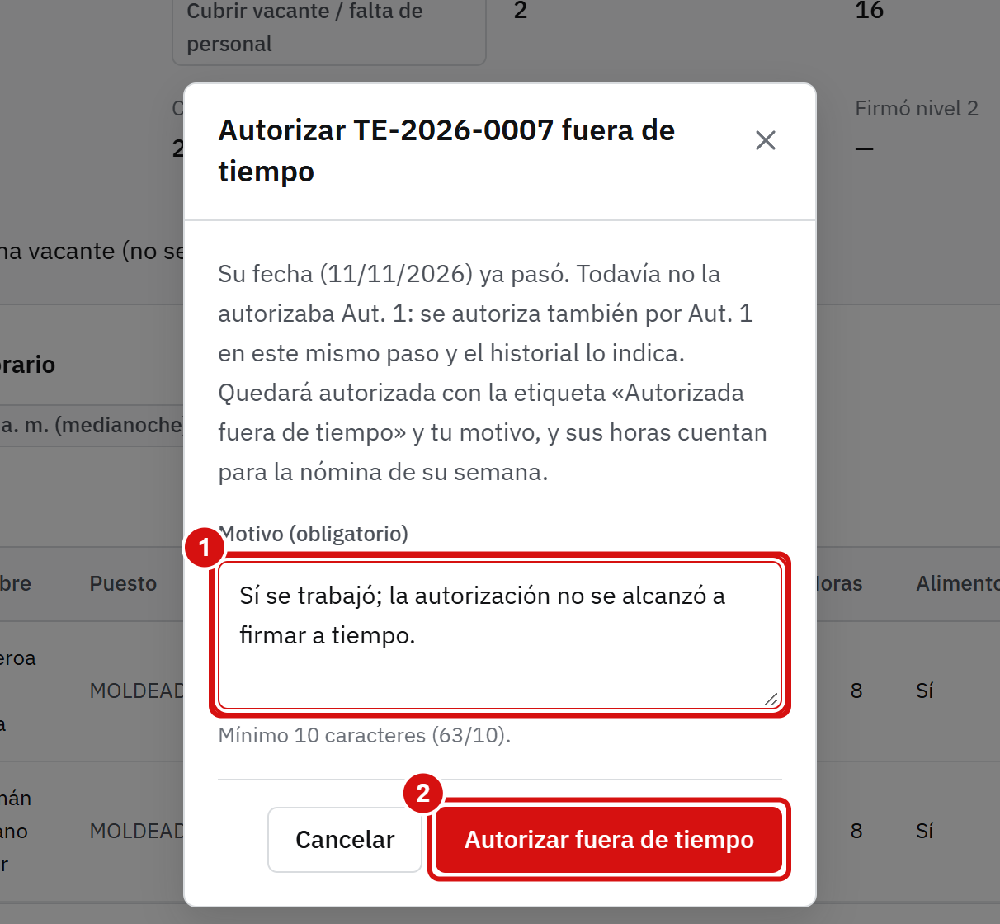
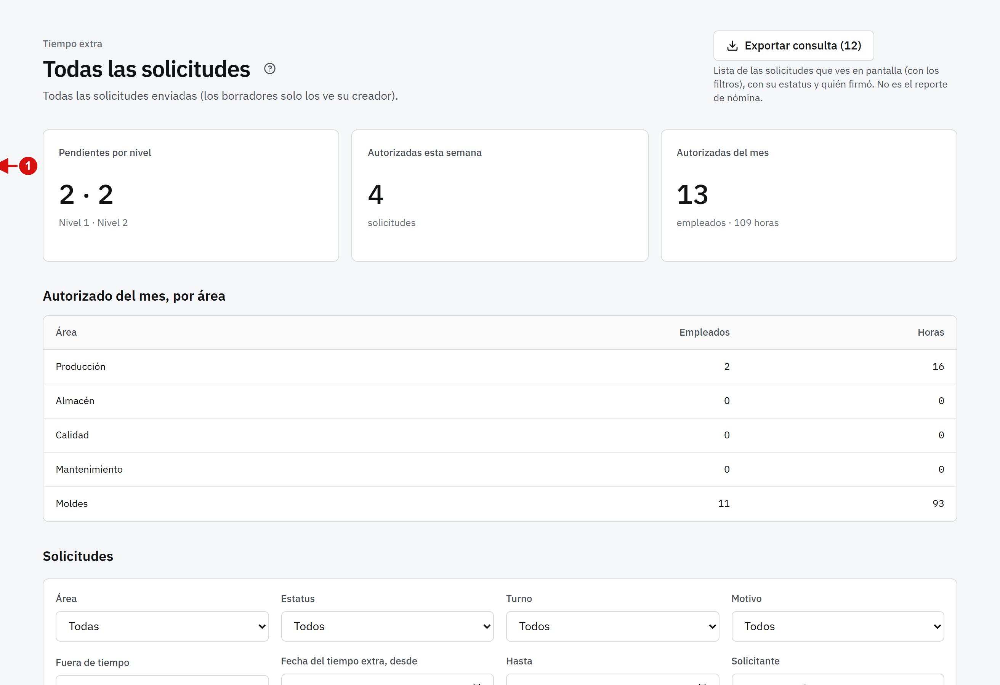
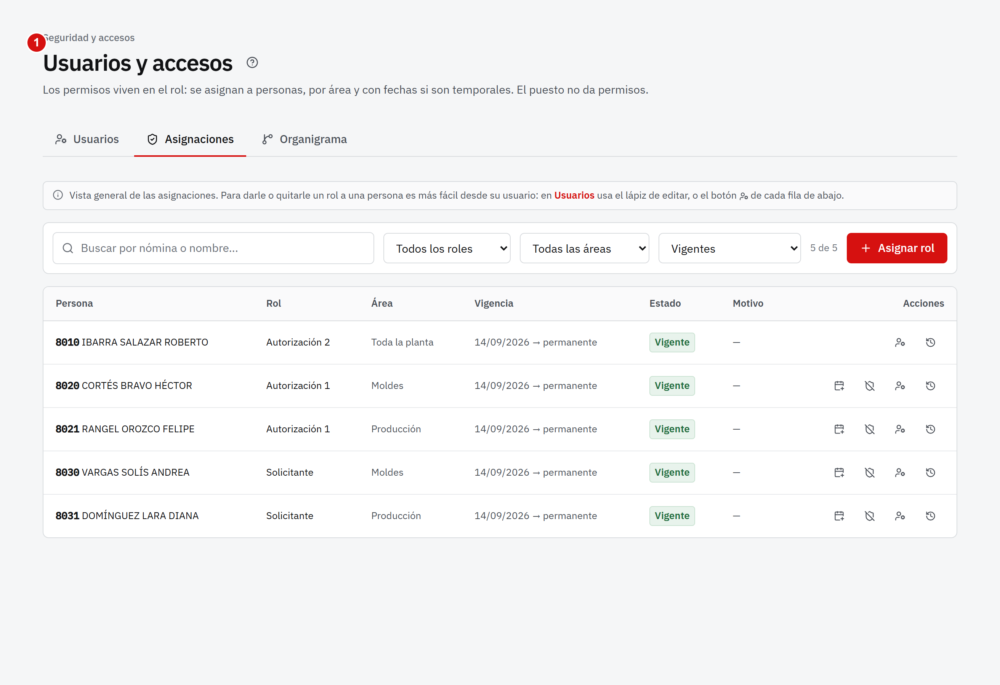

El Portal de procesos es el sistema de Century Mold para pedir tiempo extra y transporte. Tú das la segunda y última firma de toda la planta y eres quien puede autorizar lo que ya venció.
Así camina una solicitud:
Quien la pide la captura y la envía.
El jefe de su área (Autorización 1) la autoriza o la devuelve.
Tú (Autorización 2) das la segunda firma.
Recursos Humanos la confirma y pide el transporte al proveedor.
El sistema no manda correos ni mensajes. Después de firmar o devolver, avisa tú a la persona que sigue.
No puedes autorizar lo que tú mismo capturaste en el nivel de revisión. Lo que tú capturas queda autorizado al enviarlo, con tu firma.
2. Primeros pasos
Entrar al portal
Abre https://centurymold-qro.web.app en tu navegador (Chrome, Edge o el de tu celular).
Escribe tu número de nómina.
Escribe tu contraseña. El ojito sirve para ver lo que escribes.
Toca Iniciar sesión.
Si no la recuerdas, toca ¿Olvidaste tu contraseña?.
Las contraseñas solo se restablecen en persona, con Sistemas o Recursos Humanos y tu identificación.
Tu pantalla de inicio
En el menú, Por autorizar te dice cuántas solicitudes esperan tu firma.
El inicio resume lo pendiente y lo que viene en los próximos días.
En el pie del menú están Ayuda y manuales (este manual y su guía rápida en PDF) y Cerrar sesión.
3. Revisar y autorizar
En Por autorizar ves las solicitudes que ya firmó el jefe de área y esperan tu firma, de todas las áreas. Puedes filtrar por área o por fecha.

La pestaña Por autorizar muestra lo que espera tu firma.
Toca Revisar para abrir una solicitud.
Con Todas marcas todas las casillas.
Con Autorizar seleccionadas firmas varias juntas.
La solicitud abierta trae la fecha, los motivos, cada empleado con su horario y su ruta, quién firmó antes y el historial. Si usa más de una ruta, lee la justificación: cada ruta extra cuesta.

Escribe un comentario si quieres (al autorizar es opcional).
Toca Devolver si hay algo que corregir.
Toca Autorizar: la solicitud queda lista para Recursos Humanos.

El aviso confirma la firma. Recursos Humanos ya la ve en Por enviar al proveedor.
4. Devolver una solicitud

Abre la solicitud con Revisar.
Escribe qué debe corregir en Comentario (obligatorio, mínimo 10 letras).
Toca Devolver.
Al devolverla, regresa a quien la pidió y vuelve a empezar desde el nivel 1 cuando la reenvíe. Avísale a esa persona: el portal no lo hace.
5. Autorizar lo que ya venció (fuera de tiempo)
Una solicitud vence cuando pasa el día del tiempo extra sin terminar de autorizarse. Ya nadie la firma de la forma normal; solo tú (Autorización 2) puedes autorizarla fuera de tiempo, si de verdad se trabajó.
Entra a la pestaña Vencidas y toca Revisar en la solicitud.

Toca Autorizar fuera de tiempo.

Escribe el motivo (de 10 a 500 letras): por qué se autoriza ahora.
Toca el botón para confirmar.
Queda registrado con tu nombre, la fecha y tu motivo. Si venía del nivel 1 sin la firma del jefe de área, queda anotado que la autorizó Autorización 2. Si Nóminas ya firmó esa semana, el portal te avisa: puede requerir un ajuste en el formato.
6. Consultar todas las solicitudes

En el menú, Tiempo extra muestra todas las solicitudes de la planta, con filtros por área, estatus, fechas, turno y motivo, y permite descargar el resumen en Excel.
Es de solo lectura: para autorizar o devolver, usa Por autorizar.
7. Dar permisos a otras personas
Como Autorización 2 puedes dar y quitar el rol de Autorizador 1 y de solicitante en un área; crear usuarios, restablecer contraseñas (de usuarios y de Nóminas) y dar o quitar el rol del sistema Recursos Humanos y Nóminas. No puedes dar Autorización 2 ni Administrador, ni restablecer la contraseña de un RH.

Entra a Personal › Usuarios y accesos › Asignaciones. Ahí ves quién tiene qué rol y hasta cuándo, y puedes asignar o revocar.
Cada asignación tiene fecha de inicio y, si quieres, de fin (por ejemplo, para una suplencia). Todo queda en la bitácora.
8. Preguntas frecuentes
No veo una solicitud que debería estar.Solo llegan a ti las que ya firmó el jefe de área. Si aún está en el nivel 1, mira en Tiempo extra (consulta) quién la tiene.
Autoricé por error.No se deshace. Pide a Recursos Humanos que la devuelva o la cancele con un motivo, antes de que se confirme al proveedor.
¿Qué pasa si autorizo fuera de tiempo y la semana ya está firmada en Nóminas?El portal te lo avisa. La solicitud queda autorizada, pero su tiempo extra no entra solo al formato ya firmado: Nóminas o Recursos Humanos tienen que ajustarlo.
Se cerró mi sesión.Por seguridad se cierra a los 30 minutos sin usar. Entra de nuevo; lo ya firmado no se pierde.